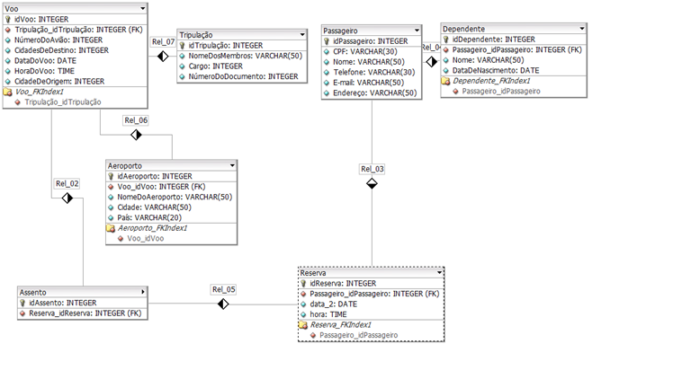
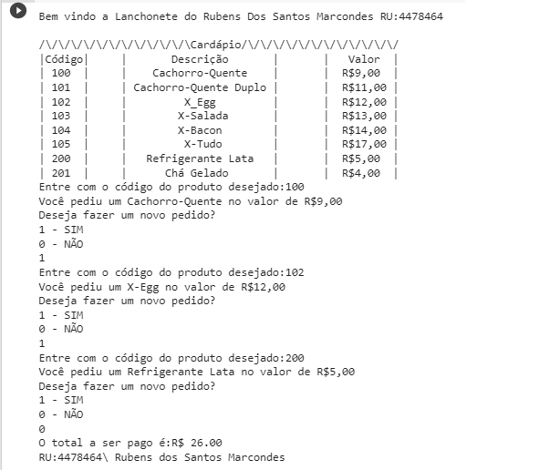

Projetos
O Modelo Entidade-Relacionamento (MER) para uma empresa aréa
Com base no Modelo Relacional dado e utilizando a Structured Query Language (SQL), no MySQL Workbench, desenvolvi um banco de dados.


Sistema programado em Phyton para uma lanchonete.
